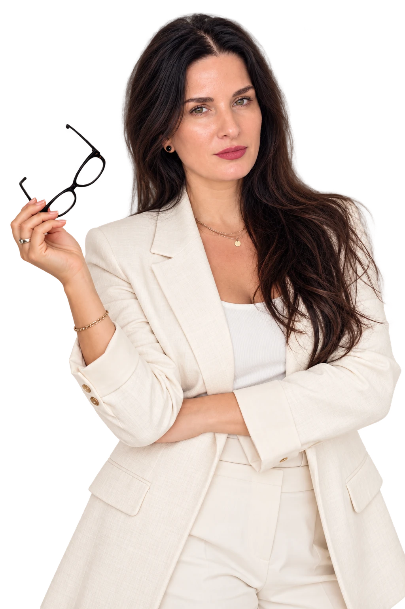
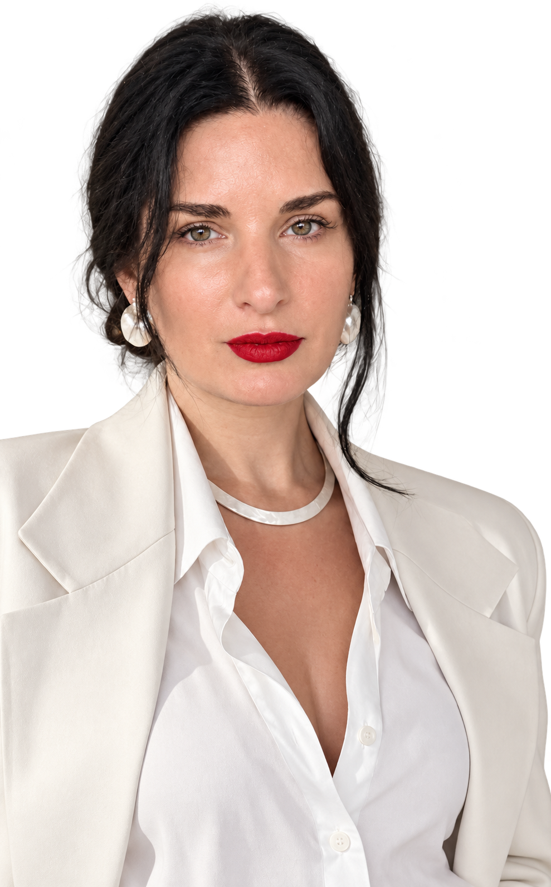

Ви сидите з пачкою аналізів та не знаєте, що з ними робити далі.
Глибина. Виваженість. Дія.
Бачимо кожну дитину.
І будуємо для неї
маршрут
Для дітей із затримкою нейророзвитку, аутизмом, РДУГ — від першої тривоги до чіткого плану. Команда лікарів веде дитину одним маршрутом: невролог, психіатр, гастроентеролог, метаболіст, дитячий дієтолог, генетик.
З урахуванням безпекової ситуації всі консультації наразі проводяться виключно засобами зв'язку.

Впізнаєте себе?
Якщо хоча б одне — про вас, ви за адресою
Кожен спеціаліст бачить свій шматок, а цілої картини немає.
Дитина приймає купу всього, і ви вже не впевнені, що це справді потрібне саме зараз.
Дитина не говорить, не дивиться в очі, не хоче займатися попри зусилля — а єдина відповідь на це: «займайтеся більше».
Істерики, агресія, поганий сон — а ніхто не аналізував, що при цьому відбувається в організмі.
Були покращення — і знову відкат, і ви не розумієте чому.
Вам кажуть «почекаємо», «переросте», «хлопчики вони повільніші».
Медична причина
За поведінкою може стояти
медична причина.
Не говорить, не дивиться в очі, не хоче займатися, істерики, агресія — усе це часто розглядають лише як поведінку або «особливості розвитку». Дитині призначають заняття та кажуть займатися.
Але за цими проявами можуть стояти медичні стани. Одні ми знаходимо часто: проблеми з кишківником, анемію, глистяні інвазії, інфекції. Інші, генетичні чи метаболічні, трапляються рідко, але пропускати їх не можна: для частини з них є окремі підходи до лікування.
Тому ми дивимося на дитину як лікарі. Хворобу там, де її немає, ми не шукаємо. Але й на діагноз усе не списуємо. Виключаємо те, що не можна пропустити, та шукаємо те, що можна скоригувати.
Бачимо дитину цілісно
Шукаємо причину
Будуємо маршрут
Працюємо командою
Як ми працюємо
Чотири кроки
від хаосу до плану
Анкета
Ви заповнюєте анкету та надсилаєте все, що вже є: аналізи, висновки, МРТ, ЕЕГ. Лікар вивчає це до зустрічі.
Консультація
Розбираємо історію дитини, наявні обстеження та те, що вас турбує найбільше.
Маршрут
Ви отримуєте письмовий план: які обстеження потрібні та в якій послідовності, що зробити зараз, а що можна відкласти, до кого з команди та навіщо.
Повторні консультації
Оцінюємо результати обстежень та коригуємо план. Якщо питання виходить за межі компетенції одного лікаря, він сам підключає колегу потрібного профілю. Вам не доведеться самим вирішувати, до кого йти далі та як поєднати різні рекомендації.
Після першої консультації
Що ви отримуєте
Що ви отримуєте
на руки
Після консультації ви отримуєте письмовий висновок або рекомендації відповідно до обраної послуги. Для комплексного супроводу дитини — маршрут наступних дій.
- Письмовий маршрутний лист на найближчі 3–4 місяці — за потреби
- Список обстежень з поясненням, навіщо кожне
- Що НЕ робити та від чого можна відмовитися
- До кого з команди звернутися далі, якщо це потрібно
Коли до кого
Не знаєте, з якого лікаря почати? Подивіться, що турбує найбільше.
01 / 05
З чого почати
Якщо дитина пізно почала сидіти чи ходити, є зміни м’язового
тонусу, ходи або координації — варто почати з дитячого невролога.
Якщо турбують мовлення, соціальна взаємодія, відсутність
вказівного жесту чи інші ознаки можливого розладу нейророзвитку —
потрібна оцінка розвитку, зокрема дитячим психіатром.
Таку оцінку не обов’язково відкладати до завершення інших
обстежень. Якщо дитина втратила набуті навички або має виражені
незрозумілі погіршення після хвороб, лікар визначить необхідність
додаткової неврологічної чи метаболічної діагностики. Якщо ви вже
відвідали багатьох фахівців, але маєте конкретні сумніви щодо
висновку чи призначень, можна обрати «Другу думку».
Бачимо дитину цілісно
Шукаємо причину
Будуємо маршрут
Працюємо командою
Команда
Лікарі, які бачать
одну картину
Кожен відповідає за свою частину. Складні випадки обговорюємо разом, щоб дитина отримувала один послідовний маршрут.
Керівниця медичного центру «Розвиток»
Закутня Яна Валеріївна
Лікар-гастроентеролог · Сімейний лікар
До відкриття «Розвитку» була медичним директором медичного центру дітей з аутизмом. Формує клінічний підхід центру, відбирає лікарів у команду та підключається до складних випадків за показами.
Лікарі центру
Глибина. Виваженість. Дія.Спочатку розібратися в суті проблеми, оцінити знахідки й можливі рішення — та лише тоді діяти
01 / 05
01 / 05
Бачимо дитину цілісно
Шукаємо причину
Будуємо маршрут
Працюємо командою
Формати та запис
Оберіть формат, який вам потрібен
Дитячий невролог
Катерина Борисівна Адаменко або Ірина Григорівна Красіленко.Неврологічний розвиток, зміни рухів і поведінки, оцінка результатів обстежень.
ЗаписатисяКонсультація за результатами ЕЕГ та МРТ
Що означають зміни на ЕЕГ, МРТ, трактографії чи МР-спектроскопії саме для вашої дитини? Чи потрібні додаткові обстеження, спостереження або лікування?
Консультація за результатами ЕЕГ та МРТ
ЕЕГ показує зміни. Але що вони означають саме для вашої дитини?
Епілептиформна активність, особливості ритмів, зміни на МРТ, трактографії або МР-спектроскопії: що має клінічне значення, чи потрібні додаткові обстеження, спостереження або лікування?
Невролог оцінює висновок у контексті розвитку та стану дитини. Це клінічна інтерпретація, а не повторний офіційний опис МР-знімків.
Запис — за звичайним тарифом неврологічної консультації.
Психіатр для батьків
Вадим Олександрович Мозговий.Допомога мамі чи татові: тривога, виснаження, порушення сну, депресивні та інші психічні стани.
ЗаписатисяГастроентерологічна консультація
Дарія Борисівна Семенюк.Харчові труднощі, обмежений раціон і скарги з боку травлення.
ЗаписатисяГастрометаболічна консультація
Дарія Борисівна Семенюк АБО Марина Ігорівна Пацьора.Оцінка проблем травлення та обміну речовин. Консультує ОДИН лікар за вибором пацієнта; це не спільний прийом.
ЗаписатисяМетаболічна консультація
Марина Ігорівна Пацьора.Оцінка можливих порушень обміну речовин і потреби у спеціалізованій діагностиці.
ЗаписатисяДруга думка Second Opinion
Незалежна оцінка конкретного висновку, діагнозу або тактики іншого лікаря.
Друга думка (Second Opinion)
Ви не впевнені в запропонованій тактиці лікування? Хочете почути незалежну думку іншого спеціаліста?
Вам уже встановили діагноз, призначили лікування або рекомендували спостереження. Але залишаються сумніви — чи підходить ця тактика саме вашій дитині?
Коли ситуація нестандартна, результати обстежень суперечливі або існує декілька можливих рішень, важливо оцінити не лише рекомендації, а й клінічні підстави для них.
Ми розглянемо конкретний висновок, діагноз чи призначення іншого лікаря та надамо незалежну професійну оцінку.
Мета — не знайти помилку в роботі іншого спеціаліста, а визначити, наскільки обґрунтоване рішення у вашій клінічній ситуації.
Вартість консультацій
Вартість та запис — у боті
Актуальна вартість доступна в Telegram-боті.
Як записатися
Два прості кроки до консультації
- 01Оберіть лікаря за тим, що турбує найбільше у блоці «Коли до кого».
- 02Натисніть «Записатись»: бот покаже вартість, а асистент підкаже вільний час.
Про центр
Кілька лікарів.
Одна картина.
один маршрут
Наша задача
Побачити всю картину, визначити, що справді потребує уваги, і дати родині зрозумілий маршрут — що робити зараз, що перевірити далі та до кого звернутися.
Ми не працюємо разово
Після першої консультації у вас залишається письмовий план. Коли приходять результати обстежень, ми оцінюємо їх, коригуємо наступні кроки і, якщо потрібно, передаємо дитину іншому лікарю нашої команди.
Для кого наш центр
Для родин дітей із затримкою нейророзвитку, аутизмом, РДУГ та складними станами, коли потрібна не ще одна окрема думка, а зрозумілий послідовний маршрут між лікарями.
До «Розвитку» я була медичним директором медичного центру для дітей з аутизмом та працювала пліч-о-пліч з неврологом та генетиком. Там я переконалася: дитині зі складним розвитком потрібні кілька лікарів, які бачать одну картину та можуть передати пацієнта одне одному.
Тому свій центр я одразу відкривала з командою. Щойно ми отримали ліцензію, до гастроентеролога приєдналися невролог, психіатр та метаболіст. Команда центру працює разом із 2025 року.
Кожен лікар відповідає за свою частину, та в ній він знає більше за мене. А дитина отримує один послідовний план.

Закутня Яна Валеріївна
Керівниця медичного центру «Розвиток»
Бачимо дитину цілісно
Шукаємо причину
Будуємо маршрут
Працюємо командою
FAQ
Питання, які
ставлять батьки
Відповіді на те, що найчастіше хочеться знати до першої консультації.
Онлайн, у Google Meet. Первинна консультація триває 45 хвилин.
Обстеження, які вже є, ви надсилаєте заздалегідь, та лікар вивчає їх до зустрічі.
Після консультації ви отримуєте письмовий висновок або рекомендації. Протягом 7 днів після отримання документа можете поставити лікарю уточнювальні запитання щодо наданих рекомендацій.
Розуміємо, що після кількох спеціалістів довіра на нулі. Ми не просто розкладаємо чужі висновки по поличках.
Ми робимо аудит пройденого шляху: що вже зроблено, що спрацювало, а що ні. Та аудит того, що вам пропонують зараз: що потрібно негайно, а що варто відкласти.
Часто батьки одразу здають складні генетичні аналізи, амінокислоти чи органічні кислоти сечі — а базових обстежень ще немає. Послідовність має значення.
Іноді це означає, що ми повністю змінюємо план та даємо нове бачення ситуації.
Ні. Кожне призначення має підставу: діагноз, симптоми, історію дитини чи результати обстежень. Ви завжди знатимете, навіщо воно.
Часто на консультації ми, навпаки, прибираємо зайве.
Ні, та чесно про це кажемо. Ми шукаємо медичні причини, які можуть заважати розвитку: з боку кишківника, обміну речовин, нервової системи, — та працюємо з ними.
Лікар, до якого ви записалися, веде дитину в межах своєї спеціальності.
Якщо потрібен інший фахівець, він порадить, до кого звернутися, або сам залучить колегу. Складні випадки лікарі обговорюють разом. Керівниця центру підключається за показами.
Нічого спеціально здавати не потрібно. Візьміть те, що вже є: висновки лікарів, аналізи, МРТ чи ЕЕГ, якщо робили.
Якщо нічого немає — теж нормально, з цього й почнемо. Які обстеження справді потрібні, лікар визначить на прийомі.
«Швиденько глянути» — це і є консультація: щоб оцінити аналіз, лікар вивчає динаміку та історію дитини, а це щонайменше 30 хвилин роботи.
Один показник без контексту може ввести в оману та направити не тим шляхом.
На стані конкретної дитини, показаннях та чинних протоколах та міжнародних рекомендаціях. Лікар пояснює, чому радить саме це обстеження чи лікування.
Це лікар, який займається спадковими порушеннями обміну речовин: діагностує їх, підбирає лікування та спеціальне харчування.
В Україні окремої спеціальності з такою назвою немає. Метаболістами називають педіатрів, генетиків та дієтологів, які працюють саме з цими захворюваннями, зазвичай у центрах орфанних (рідкісних) хвороб.
У США для цього є окрема сертифікація лікарів (Medical Biochemical Genetics), у Великій Британії — окрема дитяча субспеціальність (Paediatric Inherited Metabolic Medicine).
Наш метаболіст Марина Пацьора працює в Центрі орфанних захворювань НДСЛ «Охматдит».
Коли є маршрут, наступний крок стає зрозумілим.
Перш ніж витратити наступні гроші на ще один аналіз чи ще одного спеціаліста — отримайте маршрут.